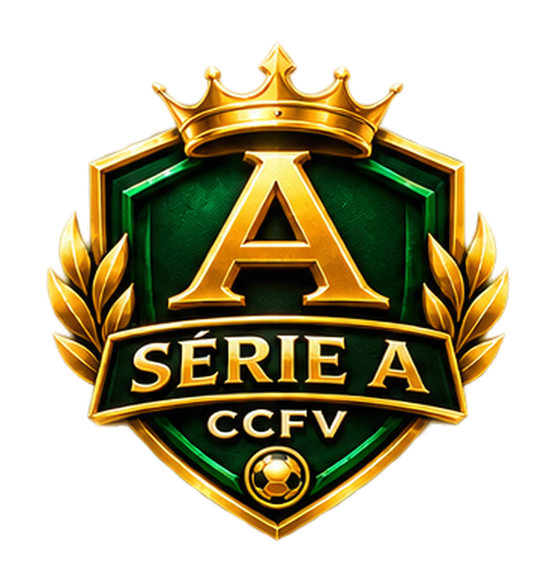
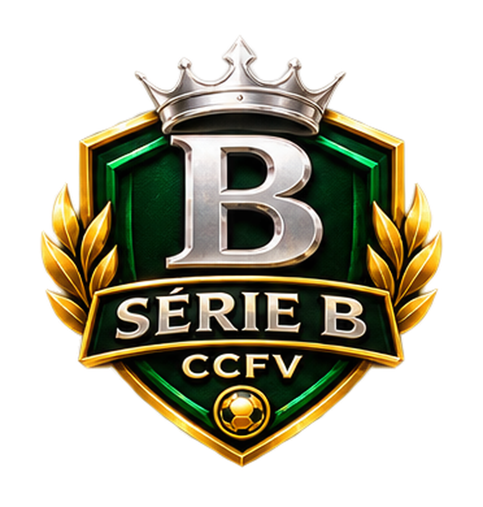
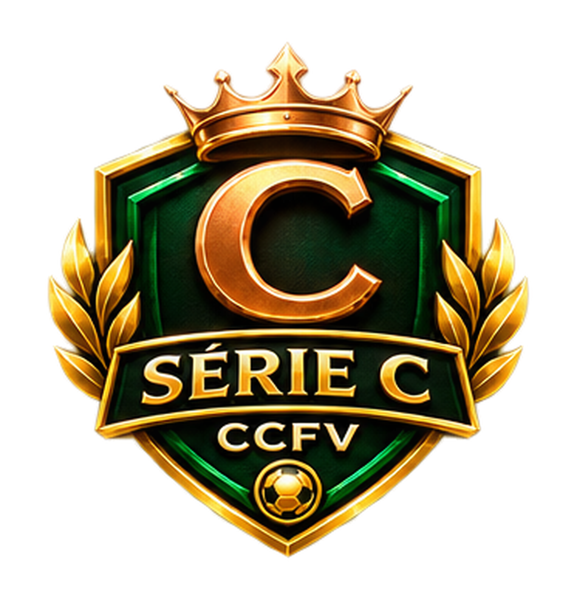
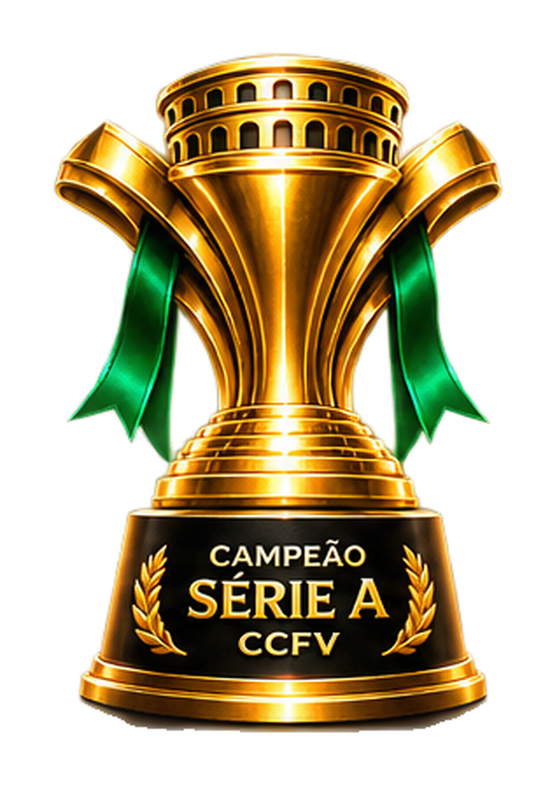
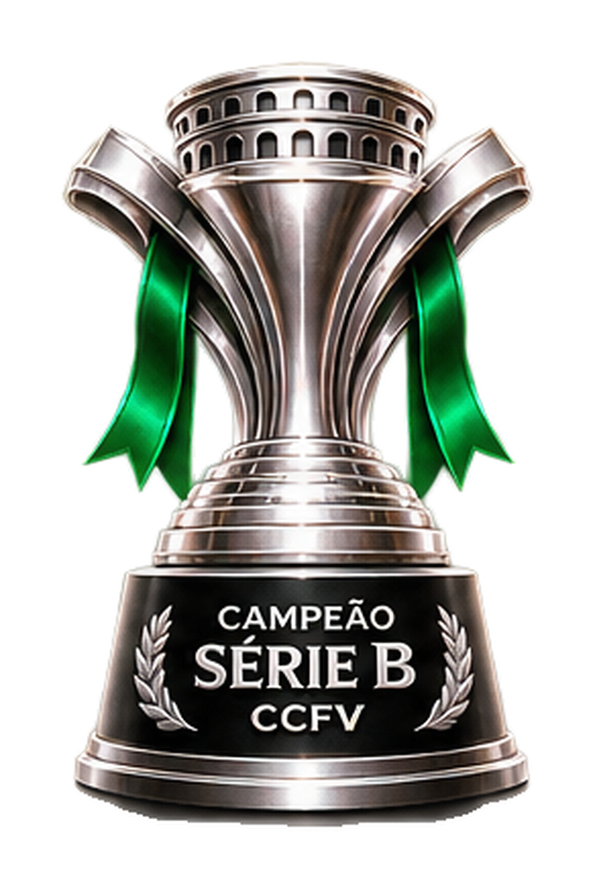
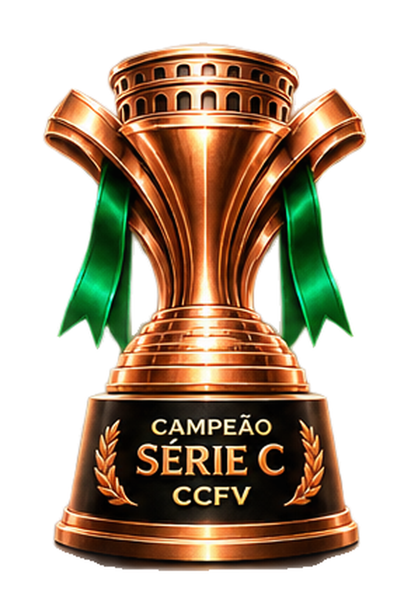
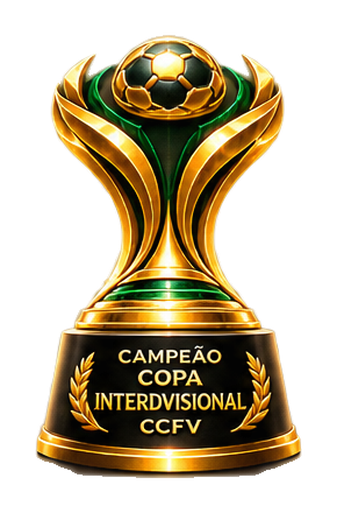
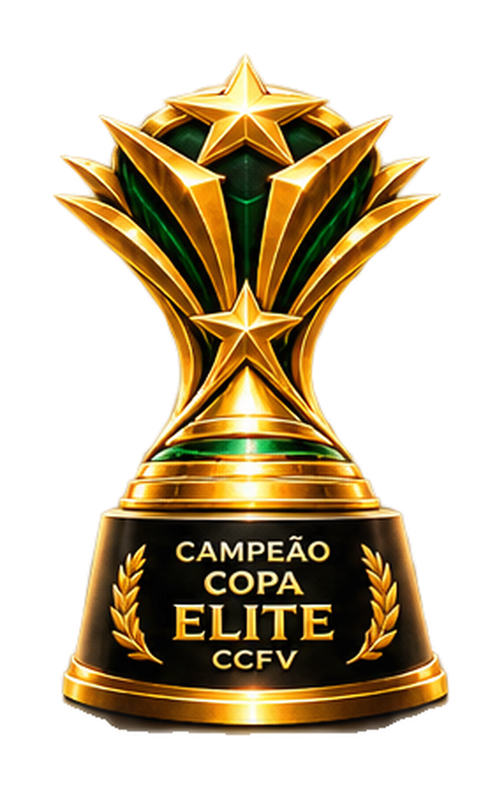
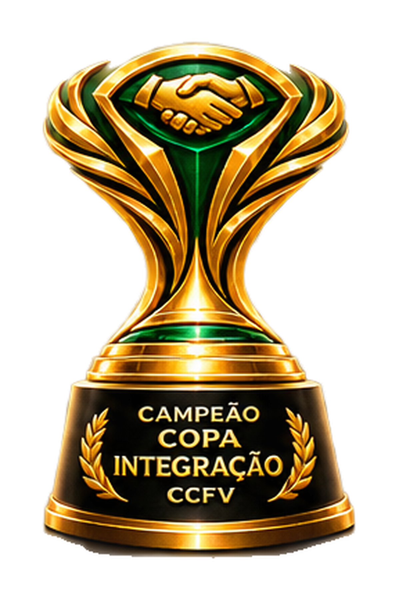

Série A
Elite da Liga · 12 clubes
ELITE
CCFV // COMPETIÇÃO OFICIAL
UM NOVO CAPÍTULO DO FUTEBOL VIRTUAL
UM CLUBE.
UM LEGADO.
Mais do que disputar partidas, é construir uma identidade. Crie seu clube, conquiste seu espaço e escreva sua história dentro da Liga CCFV.
COMPETITIVIDADE · IDENTIDADE · LEGADO
01 / 04
36
CLUBES PERMANENTES
03
DIVISÕES
22
JOGOS POR CLUBE
03
COMPETIÇÕES DE COPA
01 / A ESTRUTURA
UMA LIGA.
UMA LIGA.
TRÊS CAMINHOS.
Trinta e seis clubes formam o ecossistema da Liga CCFV. Cada divisão possui sua própria disputa, seus campeões e uma rota de evolução dentro da competição.
FORMATO DA TEMPORADA
22 JOGOS
Turno e returno. Todos contra todos dentro da própria divisão.
3 CLUBES SOBEM · 3 CLUBES DESCEM
Série B
Disputa pelo acesso · 12 clubes
ACESSO
Série C
O início da caminhada · 12 clubes
ASCENSÃO
02 / AS DIVISÕES
SEU LUGAR.
SEU LUGAR.
SUA CONQUISTA.
Cada série tem sua disputa própria. O desempenho define quem levanta a taça, quem conquista o acesso e quem precisa lutar para permanecer.
DIVISÃO 01
12 CLUBES

A ELITE
SÉRIE A
Onde os grandes se enfrentam.
Onde o título tem peso.
DIVISÃO 02
12 CLUBES

A DISPUTA PELO ACESSO
SÉRIE B
Uma temporada para provar
que o próximo nível é seu.
DIVISÃO 03
12 CLUBES

O COMEÇO DA JORNADA
SÉRIE C
Todo legado começa
com a primeira conquista.
03 / ALÉM DO CAMPEONATO
OUTRAS ROTAS.
OUTRAS ROTAS.
O MESMO LEGADO.
A temporada também conecta as divisões em copas próprias. Novos confrontos, novas histórias e mais oportunidades de conquistar um título.
36 CLUBES · FASE DE GRUPOS + MATA-MATA
↗
COPA INTERDIVISIONAL
As três divisões reunidas em uma disputa pelo título geral.
8 MELHORES DA SÉRIE A APÓS A 11ª RODADA
↗
COPA ELITE
Uma disputa especial entre os destaques da primeira divisão.
24 CLUBES · SÉRIES B E C
↗
COPA INTEGRAÇÃO
Uma oportunidade para os clubes das séries B e C disputarem mais um troféu.
04 / A GLÓRIA
SEIS DISPUTAS.
SEIS DISPUTAS.
SEIS CONQUISTAS.
Cada competição possui sua própria conquista. Troféus que representam o esforço, a consistência e o legado construído dentro da Liga CCFV.

CAMPEÃO DA ELITE

CAMPEÃO DA DIVISÃO

CAMPEÃO DA ASCENSÃO

CAMPEÃO INTERDIVISIONAL

CAMPEÃO ELITE

CAMPEÃO DA INTEGRAÇÃO
CCFV / O PRÓXIMO CAPÍTULO
O CLUBE É SEU.
O CLUBE É SEU.
A HISTÓRIA TAMBÉM.
A Liga CCFV está sendo construída para dar identidade, continuidade e significado a cada temporada. Não é apenas entrar em um campeonato. É representar um clube e construir um legado.
VOLTAR AO UNIVERSO CCFV ↗